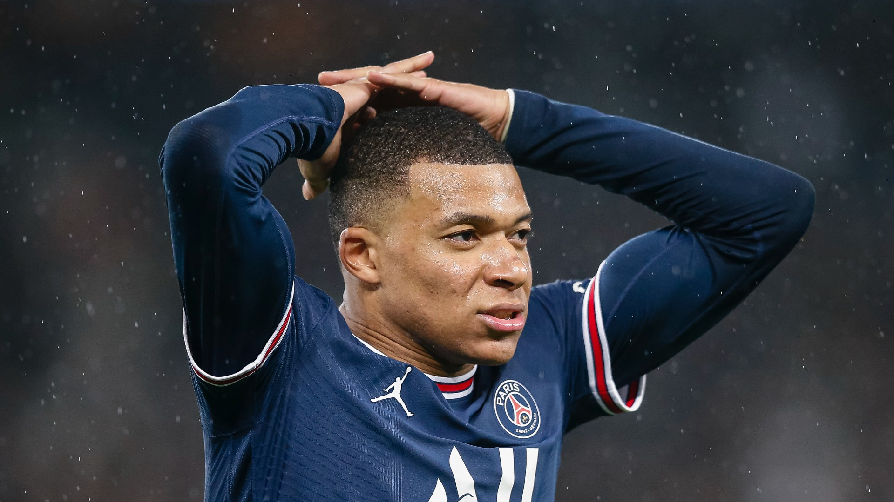
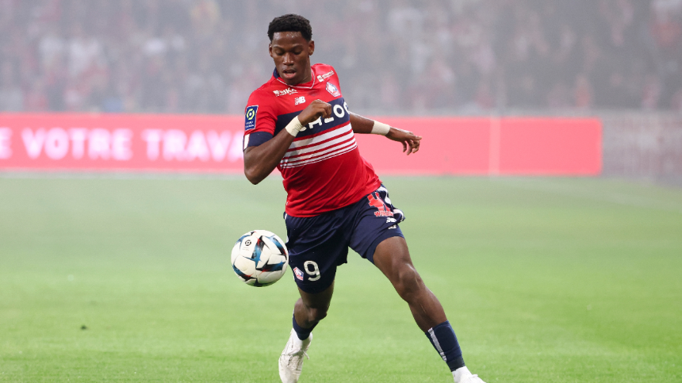
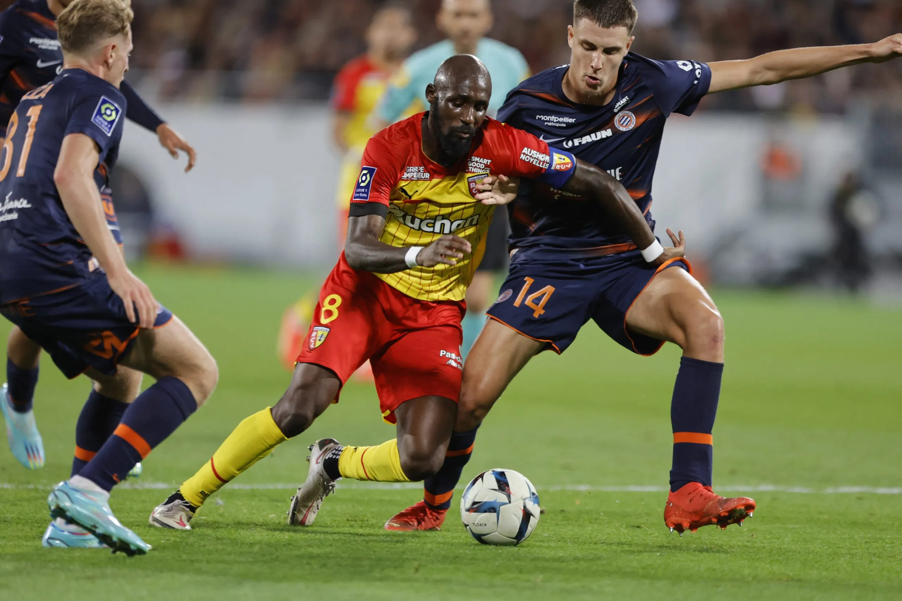
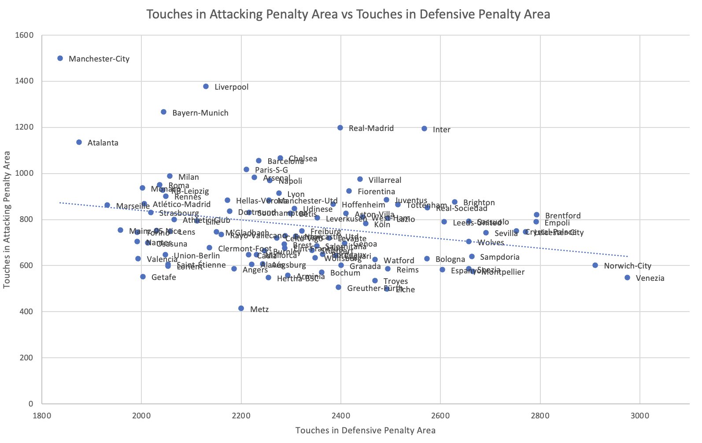
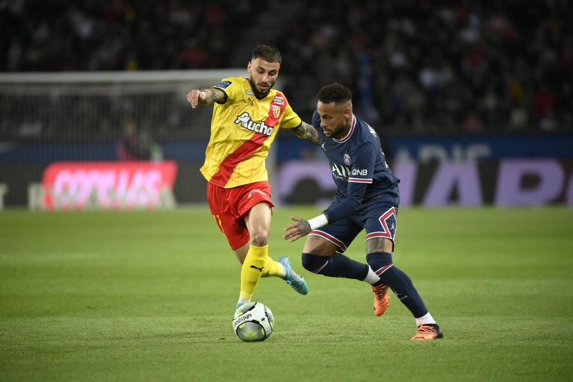
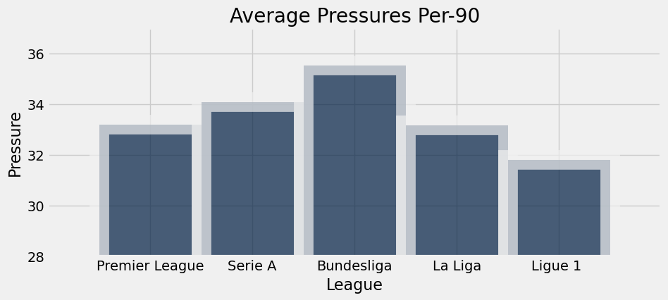
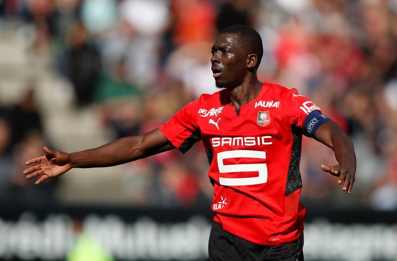

Is Ligue 1 Still a Top 5 League?
By Aakash Reddy | April 16, 2023

“It’s a farmers league, though.” Let’s face it. We’ve all heard the term "farmers league" thrown around to describe leagues such as Ligue 1 due to the perception that the league generally lacks the competitiveness and financial power of other top European leagues. However, after a near complete wipeout of French football clubs in the UEFA Champions, Europa, and Europa Conference Leagues prior to late March, as well as the Ligue 1’s statistically sub-par intra-league performance compared to other top 5 leagues, it begs the question if their claims may not be so entirely unfounded.
Parisian Purgatory
When discussing Ligue 1, it's impossible not to mention its most prominent club, Paris Saint Germain. PSG has been widely regarded as the best team in the league, having won the Ligue 1 championship a remarkable seven times since 2012. However, the manner in which they have achieved this success has been questionable, with their Qatari-funded project allowing them to spend exorbitant amounts of money on transfer fees and wages, which has created an uneven playing field in the league. This has had a detrimental effect on the other teams in the league, who have struggled to compete with PSG's financial might.
Furthermore, PSG's performance in this year’s UEFA Champions League campaign has only emboldened critics of Ligue 1 as in the last seven years, PSG has been knocked out in the last 16 of the competition five times, indicating a lack of consistency and resilience in the face of tough opposition that the Ligue 1 appears to lack. This has raised questions about the team's ability to perform at the highest level of European football and has undermined their status as one of the continent's elite clubs.
Moreover, the lack of competition and success in European competitions has also led to a lack of interest and recognition for the Ligue 1, both domestically and internationally. This has resulted in a perception that the league is of a lower quality compared to other top European leagues, which has had a negative impact on the league's reputation and financial power.
While PSG's dominance in the Ligue 1 cannot be denied, their dominance and reliance on financial muscle have created an uneven playing field in the Ligue 1 which combined with their lack of success in the UEFA Champions League has raised doubts about the league's competitiveness and quality. These factors have put the Ligue 1's status and reputation in question and have highlighted the need for greater competition and sustainability.
Running Behind Schedule
The Ligue 1 has faced criticism not only for its lack of competitiveness in European competitions, but also for its intraleague competitiveness in recent years. According to distance traveled data from the 2021-22 Ligue 1 season below, the league ranks a disappointing 20th in both the average distance covered by each player and the average distance covered while in high intensity, when compared to available data from other European leagues.
In contrast, the Premier League, widely considered one of the best leagues in the world, ranks 11th in average distance traveled and 3rd in average distance covered in high intensity. This suggests that while players in the Premier League may run a similar distance to those in other European leagues, they do so at a higher intensity. The Ligue 1, however, fares poorly in both these categories, indicating not only a narrow style of football but also a less intense one, especially when compared to the overall data from the Champions League and Europa League.
This poor running data can also be a cause for concern for the players' long-term health and well-being. Higher levels of fitness and work rate are essential for players to perform at their best and avoid injury. The reduced running activity and lack of emphasis on fitness and work rate in the Ligue 1 could lead to a higher risk of injury and may also limit the potential for French players to compete at the highest level of football and for international players to develop a brand for themselves, which may be a contributing factor for French clubs’ lack of success in Europe.
Additionally, a narrow and less intense style of play can lead to a lack of flair and panache, thereby devaluing the league in terms of its engagement and appreciation among fans and further contributing to Ligue 1’s negative perception.
A Struggle At Both Ends
In addition to low intensity matches, it appears that the majority of Ligue 1 teams struggle with maintaining possession and taking enough touches in the attacking and defensive areas of the pitch. As seen in the scatter plot below, top teams usually take more touches in the attacking penalty area and fewer touches in the defensive penalty area, thus indicating better teams in the top left and poorer teams, ones that are pressured to take more touches in the defensive penalty area, in the bottom right and bottom middle of the scatter plot.
Of all the teams in the Ligue 1, disappointingly only four - Lyon, Monaco, PSG, and Rennes have a point in the top left quadrant of the graph.
This suggests that the majority of teams in Ligue 1 struggle with maintaining possession and taking enough touches and creating opportunities for attacking and defending. In contrast, teams in other top European leagues like the Premier League and La Liga tend to have a higher number of teams in the upper left and middle quadrants, indicating a stronger emphasis on possession and ball control.
The poor running data and low possession/touches in key areas can have a significant impact on Ligue 1 teams' performance in European competitions. In matches against top teams from other European leagues, Ligue 1 teams may struggle to keep up with the pace and intensity of the game due to their lower levels of fitness and work rate. Additionally, their weaker emphasis on possession and ball control could make it more difficult to compete against teams that are skilled in these areas.
Applying Pressure?
Low match pressure and intensity is a recurring trend in Ligue 1, which is further highlighted by the league's low average number of pressures per game. Compared to other top European leagues such as the Premier League, La Liga, Serie A, and the Bundesliga, Ligue 1 falls well behind in terms of the number of pressures applied during matches. This indicates a lack of defensive and offensive effort, and a lower level of physicality and intensity within the league.
The low number of pressures also suggests that the teams in Ligue 1 may not be pressing as aggressively and efficiently as they should be, which can result in teams struggling to win the ball back and create scoring opportunities. In contrast, teams in other top leagues are more aggressive in their pressing and have a greater emphasis on winning the ball back quickly and efficiently, which can lead to more successful attacking plays that the Ligue 1 lacks.
Verdict
While there may be some evidence to support the “farmers league” title, such as poor performances by French clubs in UEFA competitions and lower running and possession statistics compared to other leagues, it is ultimately up to individual interpretation. However, it is clear that the Ligue 1 faces significant challenges in improving its standing among other top European leagues and attracting more fans and viewers. These factors have highlighted the need for greater competition and investment in the league to enhance its reputation and competitiveness on the European stage.
However, it’s not all doom and gloom for L'hexagone. To address these challenges, the Ligue 1 may need to focus on improving the quality of its clubs and investing in developing its talent pipeline. This could include increasing the number of clubs that can compete at the highest level, providing better resources for clubs, and offering incentives for clubs to develop and retain top talent. Without such improvements or similar implementations however, it seems the gap to Europe’s elite will only continue to widen.